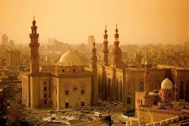

The history of Islam concerns the political, social, economic, military, and cultural developments of the Islamic civilization. Most historians believe that Islam originated with Muhammad's mission in Mecca and Medina at the start of the 7th century CE,although Muslims regard this time as a return to the original faith passed down by the Abrahamic prophets, such as Adam, Noah, Abraham, Moses, David, Solomon, and Jesus, with the submission (Islām) to the will of God. According to the traditional account, the Islamic prophet Muhammad began receiving what Muslims consider to be divine revelations in 610 CE, calling for submission to the one God, preparation for the imminent Last Judgement, and charity for the poor and needy. As Muhammads message began to attract followers (the ṣaḥāba) he also met with increasing hostility and persecution from Meccan elites. In 622 CE Muhammad fled to the city of Yathrib (now known as Medina), where he began to unify the tribes of Arabia under Islam, returning to Mecca to take control in 630 and order the destruction of all pagan idols. By the time he died in about 11 AH (632 CE), almost all the tribes of the Arabian Peninsula had converted to Islam,[15] but disagreement broke out over who would succeed him as leader of the Muslim community during the Rāshidūn Caliphate
The early Muslim conquests were responsible for the spread of Islam. By the 8th century CE, the Umayyad Caliphate extended from Muslim Iberia in the west to the Indus River in the east. Polities such as those ruled by the Umayyad and Abbasid caliphates (in the Middle East and later in Spain and Sout Italy), the Fatimids, Seljuks, Ayyubids, and Mamluks were among the most influential powers in the world. Highly Persianized empires built by the Samanids, Ghaznavids, and Ghurids significantly contributed to technological and administrative developments. The Islamic Golden Age gave rise to many centers of culture and science and produced notable polymaths, astronomers, mathematicians, physicians, and philosophers during the Middle Ages. By the early 13th century, the Delhi Sultanate conquered the northern Indian subcontinent, while Turkic dynasties like the Sultanate of Rum and Artuqids conquered much of Anatolia from the Byzantine Empire throughout the 11th and 12th centuries. In the 13th and 14th centuries, destructive Mongol invasions and those of Tamerlane (Timur) from the east, along with the loss of population due to the Black Death, greatly weakened the traditional centers of the Muslim world, stretching from Persia to Egypt, but saw the emergence of the Timurid Renaissance and major global economic powers such as the Mali Empire in West Africa and the Bengal Sultanate in South Asia. Following the deportation and enslavement of the Muslim Moors from the Emirate of Sicily and other Italian territories, the Islamic Iberia was gradually conquered by Christian forces during the Reconquista. Nonetheless, in the early modern period, the states of the Age of the Islamic Gunpowders—Ottoman Turkey, Mughal India, and Safavid Iran—emerged as world powers. During the 19th and early 20th centuries, most of the Muslim world fell under the influence or direct control of the European Great Powers. Some of their efforts to win independence and build modern nation-states over the course of the last two centuries continue to reverberate to the present day, as well as fuel conflict-zones in regions such as Israel/Palestine, Kashmir, Xinjiang, Chechnya, Central Africa, Bosnia, and Myanmar. The oil boom stabilized the Arab States of the Gulf Cooperation Council (comprising Bahrain, Kuwait, Oman, Qatar, Saudi Arabia, and the United Arab Emirates), making them the world's largest oil producers and exporters, which focus on capitalism, free trade, and tourism
Early Islam arose within the historical, social, political, economic, and religious context of Late Antiquity in the Middle East.The second half of the 6th century CE saw political disorder in the pre-Islamic Arabian peninsula, and communication routes were no longer secure. Religious divisions played an important role in the crisis. Judaism became the dominant religion of the Himyarite Kingdom in Yemen after about 380 CE, while Christianity took root in the Persian Gulf. There was also a yearning for a more "spiritual form of religion", and "the choice of religion increasingly became an individual rather than a collective issue." While some Arabs were reluctant to convert to a foreign faith, those Abrahamic religions provided "the principal intellectual and spiritual reference points", and Jewish and Christian loanwords from Aramaic began to replace the old pagan vocabulary of Arabic throughout the peninsula. The Ḥanīf ("renunciates"), a group of monotheists that sought to separate themselves both from the foreign Abrahamic religions and the traditional Arab polytheism, were looking for a new religious worldview to replace the pre-Islamic Arabian religions, focusing on "the all-encompassing father god Allah whom they freely equated with the Jewish Yahweh and the Christian Jehovah." In their view, Mecca was originally dedicated to this monotheistic faith that they considered to be the one true religion, established by the patriarch Abraham.
Most likely Muhammad was "intimately aware of Jewish belief and practices," and acquainted with the Ḥanīf. Like the Ḥanīf, Muhammad practiced Taḥannuth, spending time in seclusion at mount Hira and "turning away from paganism." When he was about 40 years old, he began receiving at mount Hira' what Muslims regard as divine revelations delivered through the angel Gabriel, which would later form the Quran. These inspirations urged him to proclaim a strict monotheistic faith, as the final expression of Biblical prophetism earlier codified in the sacred texts of Judaism and Christianity; to warn his compatriots of the impending Judgement Day; and to castigate social injustices of his city. Muhammad's message won over a handful of followers (the ṣaḥāba) and was met with increasing persecution from Meccan notables. In 622 CE, a few years after losing protection with the death of his influential uncle ʾAbū Ṭālib ibn ʿAbd al-Muṭṭalib, Muhammad migrated to the city of Yathrib (subsequently called Medina) where he was joined by his followers. Later generations would count this event, known as the hijra, as the start of the Islamic era.
In Yathrib, where he was accepted as an arbitrator among the different communities of the city under the terms of the Constitution of Medina, Muhammad began to lay the foundations of the new Islamic society, with the help of new Quranic verses which provided guidance on matters of law and religious observance.[51] The surahs of this period emphasized his place among the long line of Biblical prophets, but also differentiated the message of the Quran from the sacred texts of Christianity and Judaism.[51] Armed conflict with the Arab Meccans and Jewish tribes of the Yathrib area soon broke out. After a series of military confrontations and political manoeuvres, Muhammad was able to secure control of Mecca and allegiance of the Quraysh in 629 CE.[51] In the time remaining until his death in 632 CE, tribal chiefs across the Arabian peninsula entered into various agreements with him, some under terms of alliance, others acknowledging his claims of prophethood and agreeing to follow Islamic practices, including paying the alms levy to his government, which consisted of a number of deputies, an army of believers, and a public treasury. The real intentions of Muhammad regarding the spread of Islam, its political undertone, and his missionary activity (da'wah) during his lifetime are a contentious matter of debate, which has been extensively discussed both among Muslim scholars and Non-Muslim scholars within the academic field of Islamic studies. Various authors, Islamic activists, and historians of Islam have proposed several understandings of Muhammad's intent and ambitions regarding his religio-political mission in the context of the pre-Islamic Arabian society and the founding of his own religion: Was it in Muhammad's mind to produce a world religion or did his interests lie mainly within the confines of his homeland? Was he solely an Arab nationalist—a political genius intent upon uniting the proliferation of tribal clans under the banner of a new religion—or was his vision a truly international one, encompassing a desire to produce a reformed humanity in the midst of a new world order? These questions are not without significance, for a number of the proponents of contemporary da'wah activity in the West trace their inspiration to the prophet himself, claiming that he initiated a worldwide missionary program in which they are the most recent participants. [...] Despite the claims of these and other writers, it is difficult to prove that Muhammad intended to found a world-encompassing faith superseding the religions of Christianity and Judaism. His original aim appears to have been the establishment of a succinctly Arab brand of monotheism, as indicated by his many references to the Qurʾān as an Arab book and by his accommodations to other monotheisti